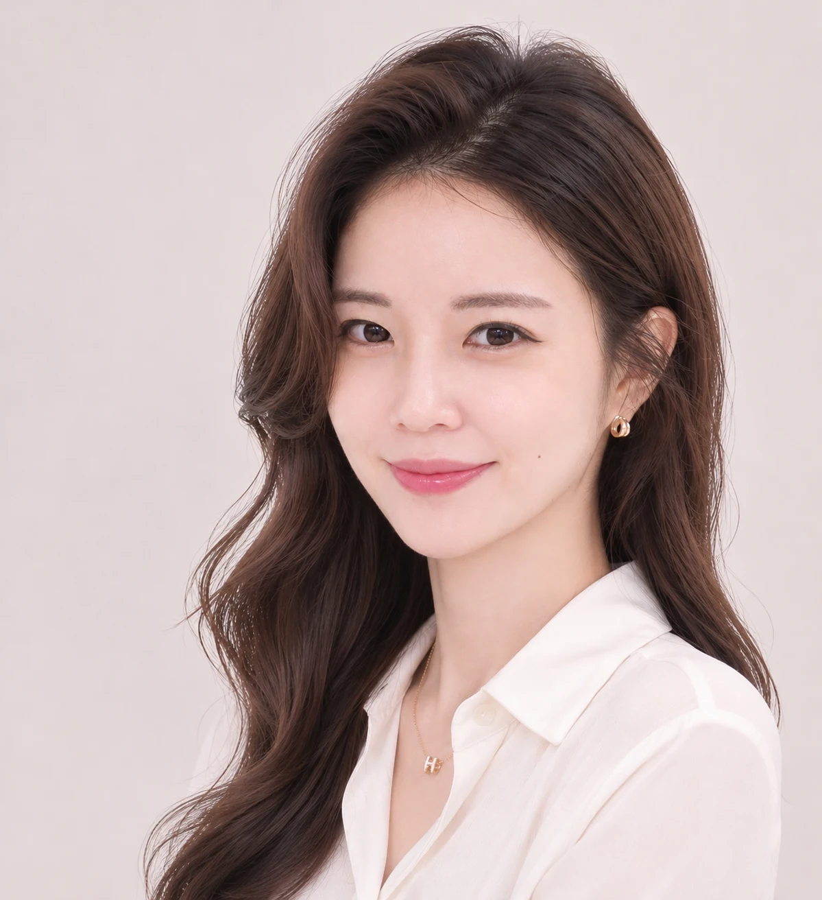
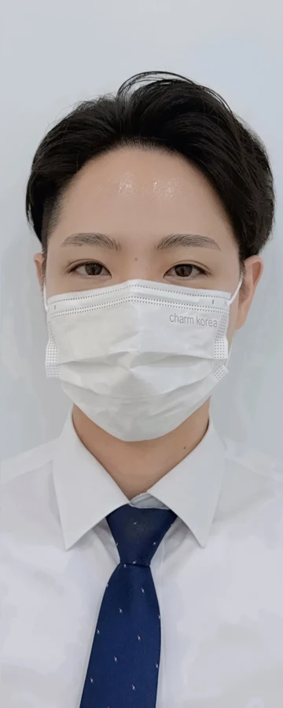
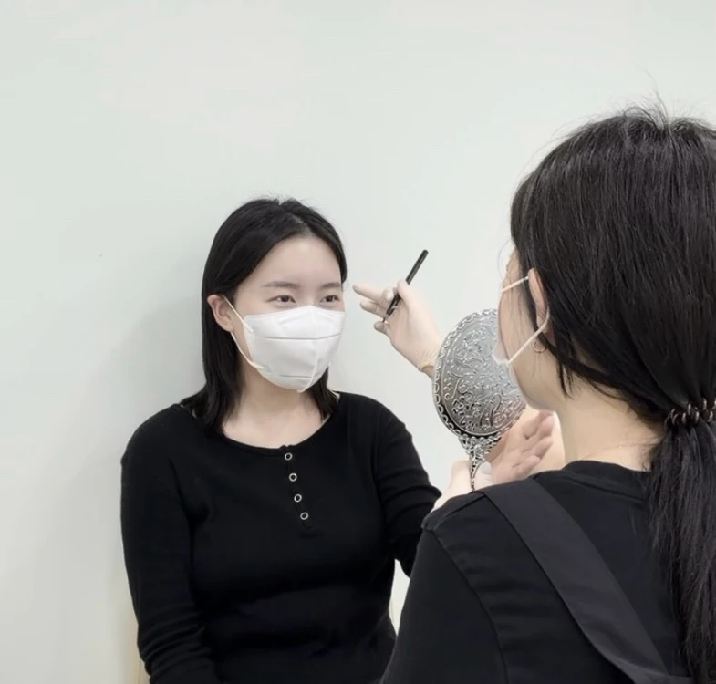
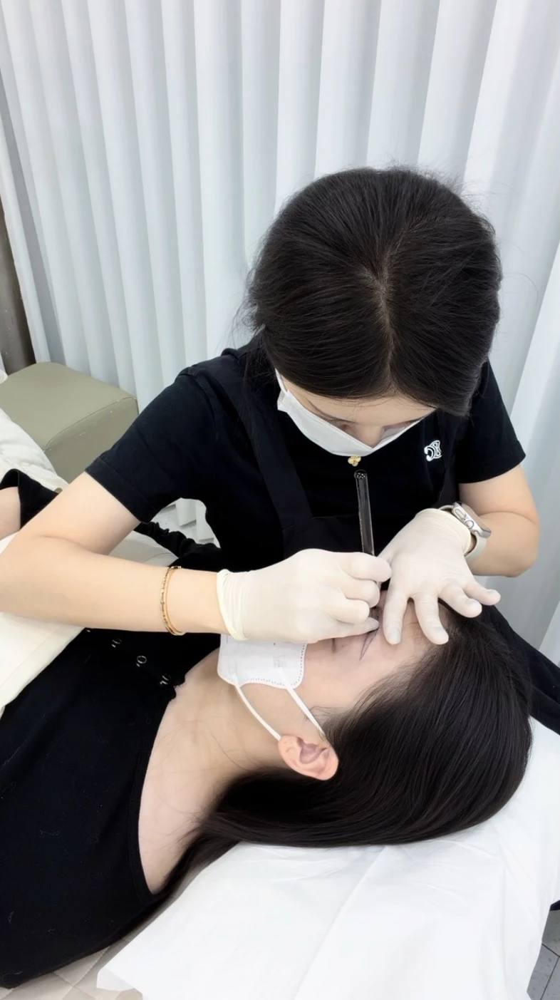
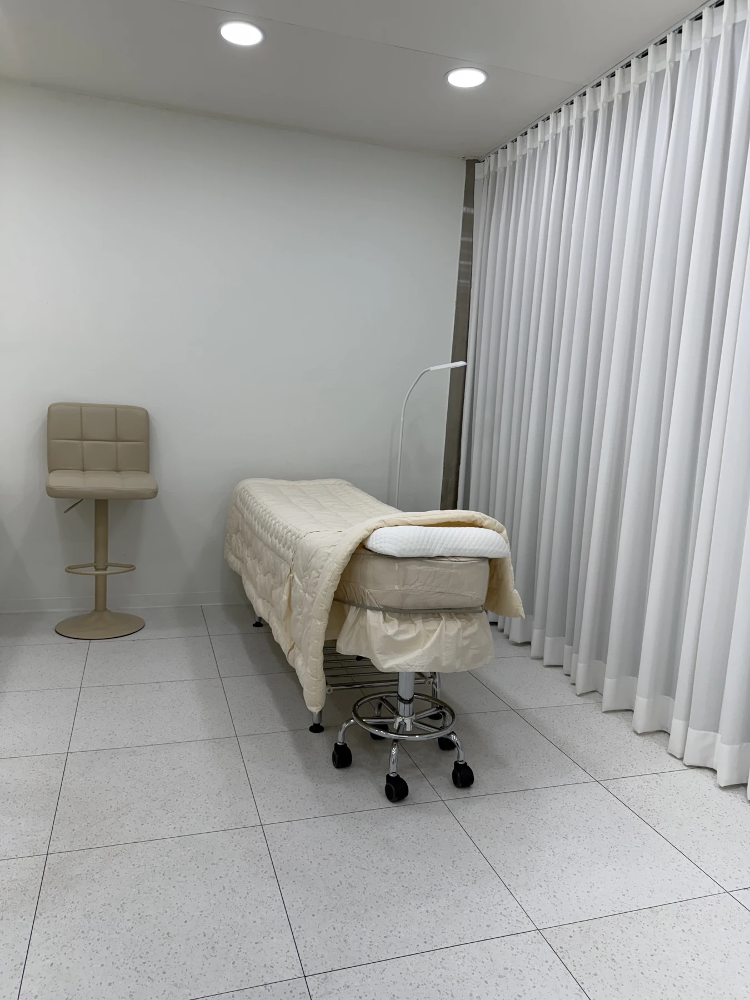
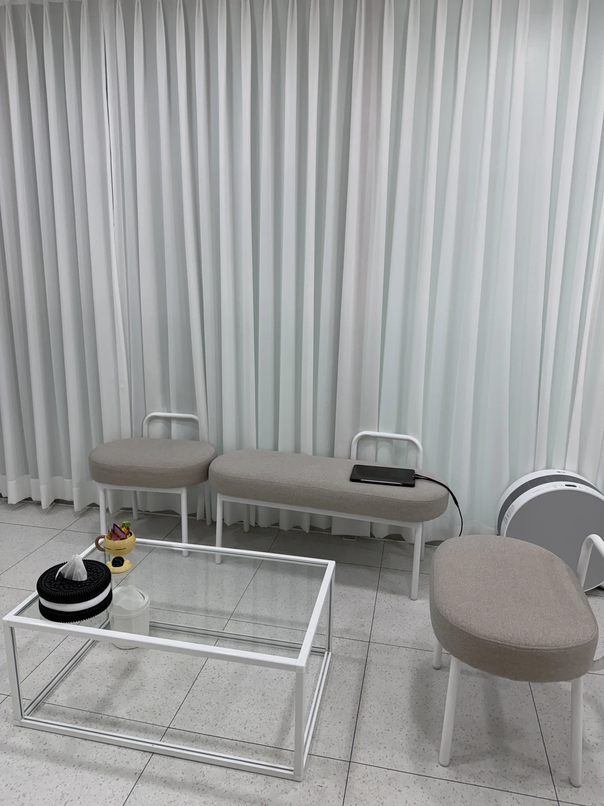
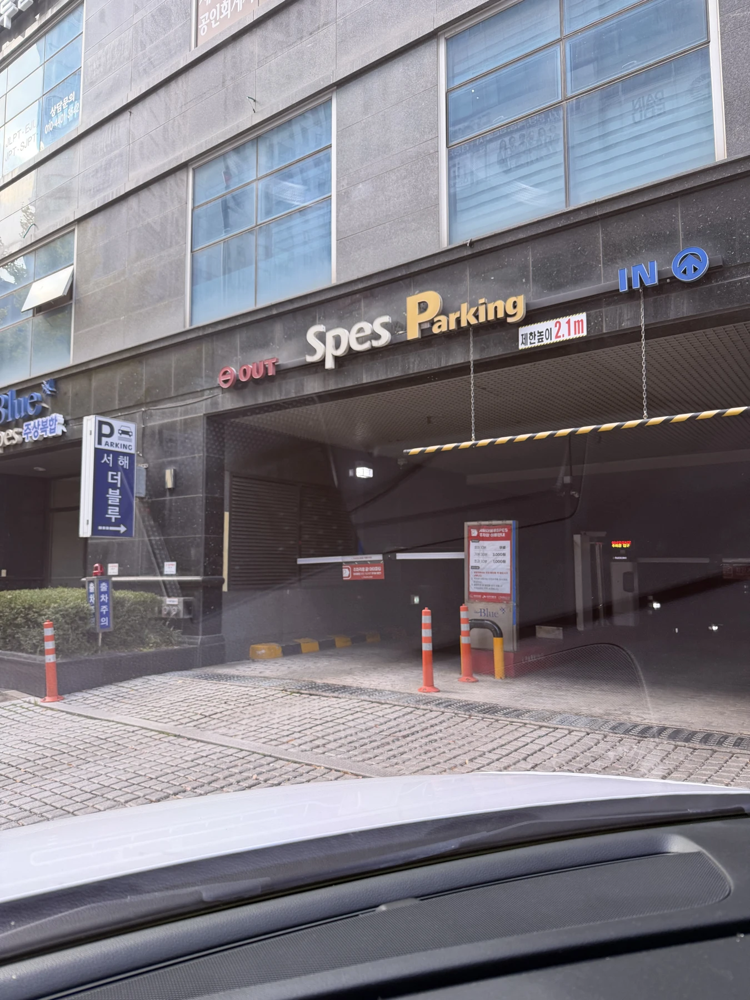
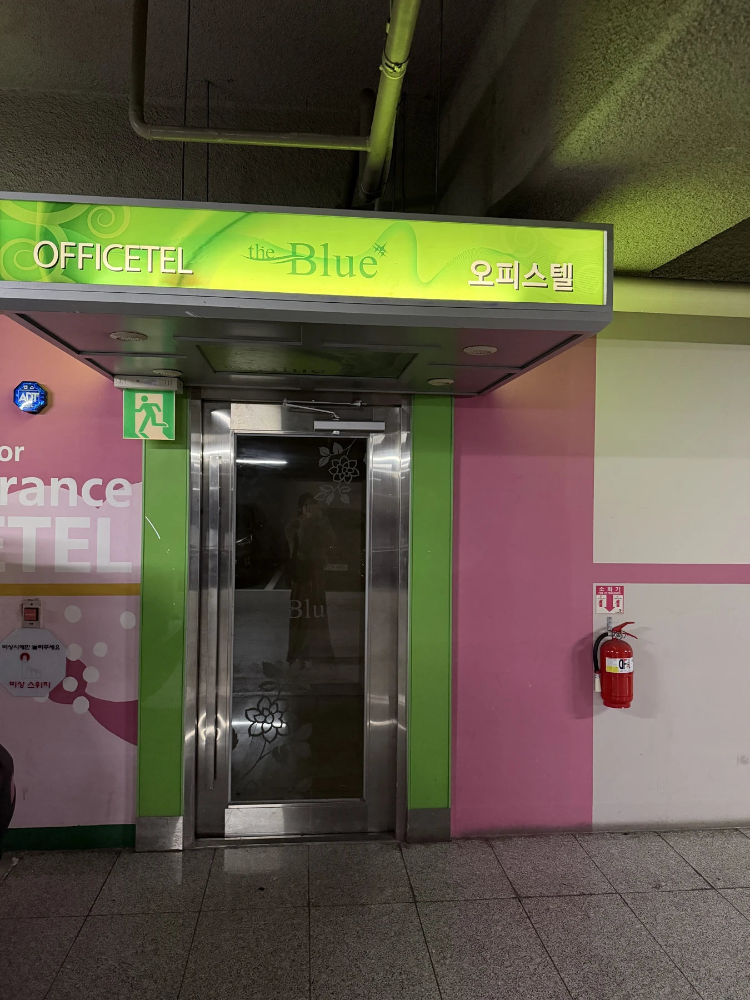
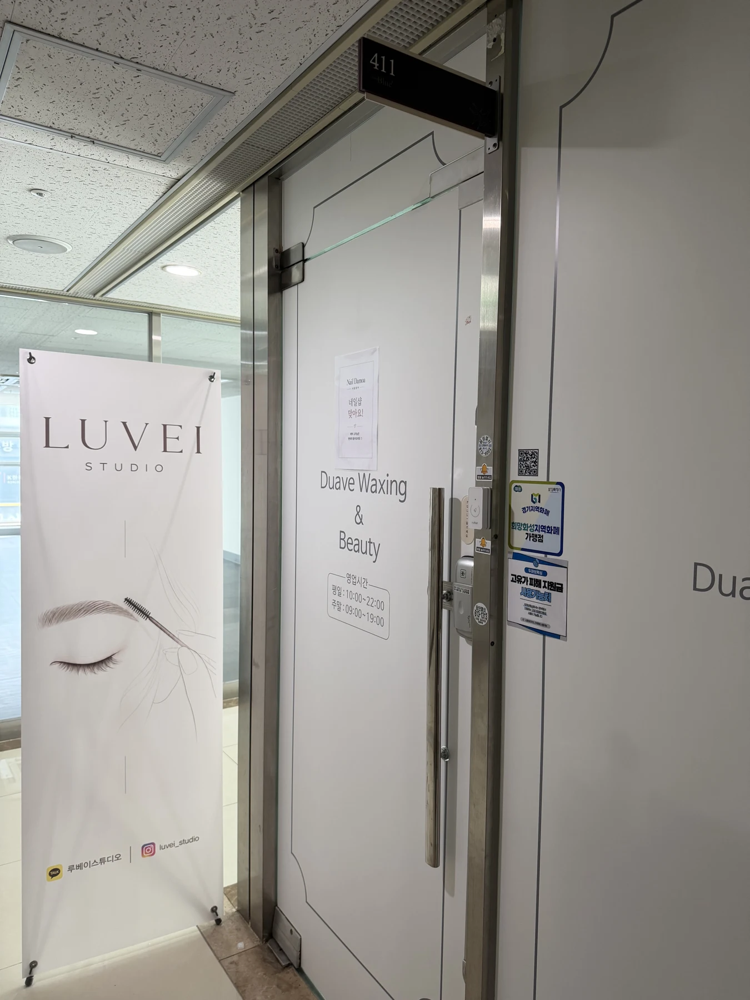

자연눈썹 · 여성
여성 자연눈썹
일반 판매가 150,000원
130,000원2026년 12월까지 · 현금가
네이버 후기 작성 필수
동탄 자연눈썹 · 고현아 원장 1:1 상담
지금 눈썹에 어울리는 두께와 모양을 그려봅니다.
거울로 확인하고, 시술 여부는 그다음에 고민하세요.
디자인을 확인한 뒤 시술 여부를 결정하셔도 됩니다.
자연눈썹 이벤트여성 13만 원 · 남성 15만 원
2026년 12월까지 · 현금가 · 네이버 후기 작성 필수
WOMEN’S BROW · 여성 눈썹
숱이 있어도 흐릿한 눈썹, 정돈하고 싶은 눈썹.
내 눈썹과 닮은 부분부터 비교해보세요.
루베이스튜디오에서 제공한 실제 시술 사진입니다. 누르면 전체 크기로 볼 수 있습니다.
사진별 촬영 시점이 확인되지 않아 시술 직후·회복 후로 구분하지 않습니다. 결과와 색감에는 개인차가 있습니다.
MEN’S BROW · 남자눈썹
눈썹모가 있어도 라인이 흐릿하거나,
빈 부분만 자연스럽게 정돈하고 싶을 때.
모량과 빈 부분, 자라는 방향을 함께 확인합니다.
두께와 길이, 눈썹 끝의 모양을 디자인으로 먼저 봅니다.
조정 가능한 부분과 남을 수 있는 좌우 차이를 설명합니다.

남자눈썹 실제 사례
제공된 실제 비교 사진입니다. 사진별 촬영 시점이 확인되지 않아 시술 직후·회복 후로 구분하지 않습니다.
영어 상담 가능합니다
Not sure which brow shape suits you?
Visit us for a free brow design consultation.
You can see the design before deciding on a treatment.
가격과 예약 안내
2026년 12월까지 이벤트
현금가 · 네이버 후기 작성 필수
자연눈썹 · 여성
일반 판매가 150,000원
130,000원2026년 12월까지 · 현금가
네이버 후기 작성 필수
자연눈썹 · 남성
일반 판매가 170,000원
150,000원2026년 12월까지 · 현금가
네이버 후기 작성 필수
정상가 200,000원 · 위 금액은 이벤트 적용가입니다.
첫 시술 1개월 이후부터 2개월 이내 방문 기준입니다. 남아 있는 모양과 색을 보고 필요한 부분을 수정·보완합니다. 기간 경과 시 비용은 별도로 안내합니다.
예약금 50,000원은 시술 금액에 포함됩니다. 예약 3일 전까지 변경·취소·환불 신청이 가능합니다. 세부 예약 안내는 일정 확정 전 카카오톡에서 확인해주세요.
현재 눈썹 사진과 원하는 느낌을 보내주시면
상담과 방문 일정을 안내해드립니다.
사전 문의부터 관리 안내까지.
전체 과정은 약 90~120분이며 상태에 따라 달라집니다.


카카오톡 예약양식과 현재 눈썹 사진으로 원하는 방향을 먼저 이야기합니다.
얼굴형·피부톤, 기존 눈썹과 잔흔, 선호하는 디자인을 확인합니다.
본래 결의 방향과 범위 안에서 보완할 부분을 설명합니다. 조정 가능한 좌우 차이와 남을 수 있는 차이도 안내합니다.
확인한 디자인을 바탕으로 진행하며, 중간에 불편한 점이 있는지 살핍니다.
관리 방법과 색이 달라지는 과정을 설명합니다. 리터치는 남은 모양과 색을 보고 필요한 부분을 보완합니다.
시술에는 일회용 멸균 용품을 사용하고, 사용 후 폐기합니다.
방문 디자인 상담 무료
사진으로 고르는 것과
내 눈썹 위에 그려보는 것은 다르니까요.
현재 눈썹과 평소 불편했던 부분을 살핍니다.
원하는 두께·길이·모양을 이야기하고,
기존 눈썹의 흐름에 맞춰 디자인을 확인합니다.
거울로 확인하고 궁금한 점을 물어보세요.
시술 여부는 그다음에 고민하셔도 됩니다.
고현아 원장을 소개합니다
은행에서 일할 때, 다른 창구에서 더 빨리 업무를 볼 수 있어도 저를 기다려주시는 고객님들이 있었습니다.
“설명도 잘해주고,
여기서 보는 게 편해.”
그 이유를 여쭤봤을 때 들었던 말이 오래 남았습니다. 처음 방문한 공간에서도 궁금한 것을 묻고, 이해되지 않은 부분은 다시 물을 수 있었으면 합니다.
지금의 루베이에서도 모양과 진하기를 함께 확인하고, 필요한 설명을 나누며 한 분씩 만나고 있습니다.
빛과 길, 나만의 인상으로 이어지는 시간.
방문 전 궁금한 점
기존 눈썹의 흐름과 선호하는 진하기를 먼저 확인합니다. 시술 직후와 회복 후 색감은 다를 수 있으며, 피부와 관리에 따라 결과에 개인차가 있습니다.
현재 눈썹 사진으로 색·진하기·범위를 먼저 확인합니다. 잔흔 상태에 따라 시술이 어렵거나 원하는 옅은 표현에 한계가 있을 수 있습니다.
모량 자체보다 결의 흐름과 빈 부분, 원하는 표현을 함께 살핍니다. 진한 눈썹이 부담스러운 경우에도 사진과 상담으로 방향을 먼저 확인해주세요.
느끼는 정도는 개인과 피부 상태에 따라 다릅니다. 진행 중 불편함을 확인하며 시술하므로, 걱정되는 부분은 미리 말씀해주세요.
본래 눈썹이 자라는 방향과 범위를 확인할 수 있도록 최대한 정리하지 않고 방문해주세요.
첫 시술 1개월 이후부터 2개월 이내 방문 시 무료 1회가 포함됩니다. 남아 있는 모양과 색을 보고 필요한 부분을 보완하며, 기간 경과 시 비용은 별도로 안내합니다.
1:1 프라이빗 공간에서 상담과 시술을 진행합니다.
10:30–23:00 · 늦은 시간 방문은 사전 문의
English consultation available


방문 전 안내
방문 디자인 상담 무료
카카오톡에 ‘무료 디자인 상담’과 희망 날짜를 남겨주세요.
지금 눈썹 사진을 함께 보내주시면 상담에 도움이 됩니다.
동탄 루베이스튜디오
한스케이크 건물 · 건물 내 지하주차장 2시간 무료
상가 엘리베이터 이용을 권장합니다.
4층에서 내려 오른쪽으로 이동하면
왼편에 LUVEI STUDIO 배너가 보입니다.

01 한스케이크 건물

02 상가 엘리베이터로 4층

03 오른쪽으로, 왼편 배너